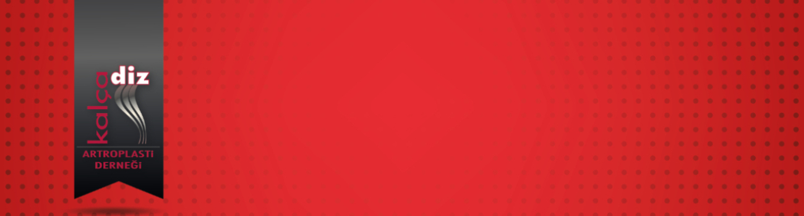

Total Kalça Protezi Sonrasında Aktif Yaşama Dönüş - 21.01.2021
Revizyon Kalça Artroplastisinde Asetabular Rekonstrüksiyon Seçenekleri - 25.02.2021
Kalçada Yumuşak Doku Dengesi - 25.03.2021



 Kalçada Yumuşak Doku Dengesi - 25.03.2021
Kalçada Yumuşak Doku Dengesi - 25.03.2021